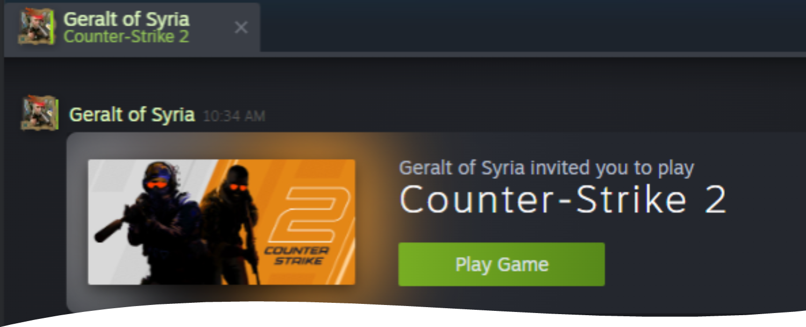
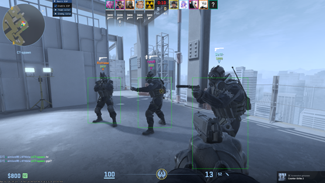
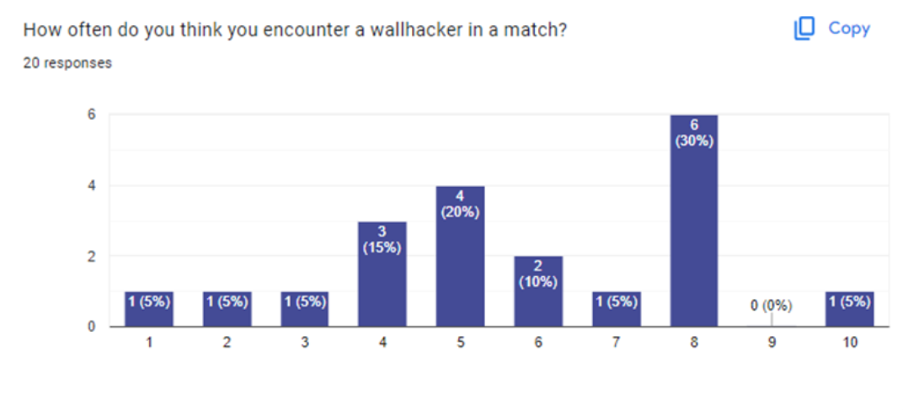
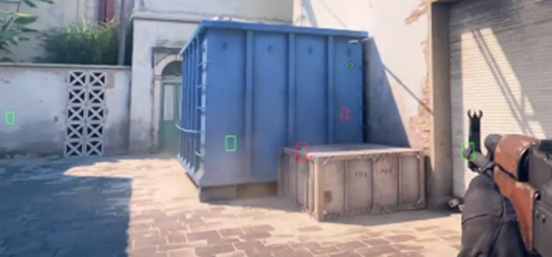
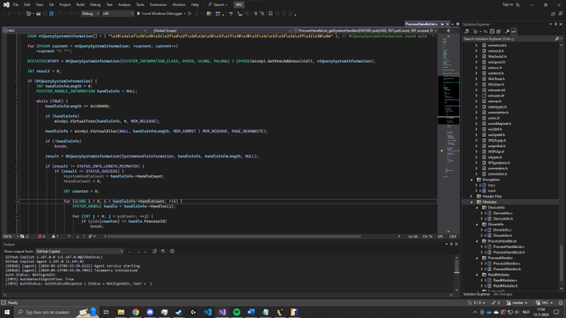

Unmasking the Cheats: A Deep Dive into Counter-Strike 2 Vulnerabilities
In the competitive world of online gaming, fairness and integrity are paramount. Yet, the persistent issue of cheating continues to plague Counter-Strike 2. My comprehensive research aims to dissect and combat the various cheats and vulnerabilities undermining this iconic game. Focusing on CVE-2021-30481 and wallhack cheats, this study provides an in-depth analysis of the mechanisms behind these exploits and proposes measures to mitigate their impact.
Understanding the CVE-2021-30481 Vulnerability

CVE-2021-30481 is a significant security flaw within Steam’s Source engine, exploited through malicious game invitations to execute arbitrary code. The vulnerability stems from a buffer overflow in the handling of command-line parameters during the game’s startup. By manipulating these parameters, attackers can establish a remote console (RCON) connection and execute harmful payloads on the victim’s system.
In my attempts to replicate this vulnerability, I initially did not succeed. To gain a better understanding and find a way to reproduce it, I contacted Florian, the reporter of this CVE. He provided valuable assistance and suggested specific approaches to replicate the exploit.
Following his suggestions, I was able to gain deeper insights and discovered a new vulnerability, which is described later on this page. This new issue allows an attacker to crash a player's game when they connect to a malicious RCON server.
Valve's Countermeasures:
Removing Vulnerable RCON Command Handlers: Valve eliminated the problematic handlers, thereby blocking the exploit’s core mechanism.
Using GetLaunchCommandLine: Transitioning to this safer alternative for handling startup parameters has reduced the risk of injection attacks.
User Warnings: For games still reliant on OS command lines, Valve now displays startup parameters, allowing users to spot and reject suspicious commands.
Wallhack Cheats: An Unseen Advantage

Wallhacks are among the most notorious cheats in Counter-Strike 2, enabling players to see through walls and other obstacles, thus gaining an unfair advantage. My study involved both theoretical analysis and practical implementation of wallhacks to understand their workings and develop effective detection methods.
Implementation of Wallhacks
Wallhacks exploit various vulnerabilities in the game engine. They range from relatively simple methods like client-side manipulation—editing game files to make objects transparent—to more advanced techniques like memory manipulation. These advanced techniques involve directly altering the game’s memory to reveal player locations or manipulate in-game visualization processes, allowing players behind walls to be visible.
Survey Insights:

Prevalence: Players frequently encounter wallhackers, with estimates varying widely across different matches.
Detection: Common signs include unnatural behavior such as shooting through walls and suspiciously accurate pre-aiming.
Community Impact: Wallhacks significantly deteriorate the gaming experience, leading to frustration and increased toxicity.
Proposed Solutions:
Enhanced Anti-Cheat Systems: Implementing more robust systems akin to those used by Faceit or Valorant.
Community Involvement: Reviving community-driven initiatives like Overwatch to empower players in identifying and reporting cheaters.
Detection of Wallhacks
Detecting wallhacks is complex and requires a layered approach. Systems like Valve’s Anti-Cheat (VAC) use methods such as file integrity checks, memory inspection, and heuristic analysis to identify cheats. These are supplemented by more advanced techniques like kernel-level monitoring, as employed by platforms like FACEIT and games like Valorant. These systems operate at the kernel level of the operating system, making them particularly effective in detecting unauthorized manipulations and monitoring suspicious system processes. However, kernel-level anti-cheat systems also raise significant privacy and security concerns. Due to their deep access to system resources, there are worries about the potential collection of personal data and the impact on system stability. This highlights the importance of transparency and strict regulations to protect user privacy while maintaining game integrity.
Developing and Testing My Own Wallhacks

To gain firsthand understanding of wallhack implementation and effectiveness of detection methods, I developed my own wallhack within a controlled environment. This practical approach provided valuable insights into the mechanics of such cheats.
Development Process:
Research: Extensive review of cheat development techniques through videos, code examples, and forums. This involved studying various methods and tools used in cheat development and understanding how they exploit vulnerabilities in the game engine.
Tool Selection: Choosing the Swed64 library for its ability to read and write game memory, which is essential for cheat development. This library provides the necessary functions to access and manipulate game data in real-time.
Implementation: Creating a proof of concept (PoC) that reads critical game data, such as player positions, and visualizes it using overlays. The PoC was developed in C# and utilized the Swed64 library to interact with the game's memory.
Swed64 Library: The Swed64 library was used to facilitate memory access for reading player positions and other essential data. This library simplifies the process of reading and writing to the game’s memory, making it an ideal choice for developing cheats.
Program.cs: The core of the PoC, responsible for reading game data and processing it for visualization. This script uses the Swed64 library to access game memory and retrieve necessary data for the wallhack.
Renderer Class: Utilizes ImGui to create overlays, drawing boxes around players and connecting lines based on team color and enemy status. This class is crucial for visualizing the data read from the game memory.
Testing:
Controlled Environment: Running the PoC in a controlled setting to observe how wallhacks function and test various detection methods. This involved creating a test environment where the wallhack could be safely executed without affecting actual gameplay.
Findings: Gaining insights into how such cheats can bypass traditional detection and developing strategies to counter them. This included observing how the wallhack manipulated game data and identifying potential methods to detect and prevent such cheats.
Adjustments and Troubleshooting: During testing, issues were encountered with the positioning of visual markers due to incorrect screen resolution settings. Adjustments were made to ensure the overlays accurately represented player positions, highlighting the importance of precise configuration in cheat development.
Real-world Application: By testing the wallhack in a simulated environment, practical knowledge was gained on how cheats function in actual gameplay scenarios. This hands-on experience was invaluable for understanding the limitations and capabilities of wallhacks.
Reverse Engineering Valve Anti-Cheat (VAC)

My reverse engineering of VAC provides critical insights into its operations and vulnerabilities. VAC employs various modules and techniques, such as monitoring system information and process handles, to detect cheats. However, it faces challenges from sophisticated methods like timing attacks and code injection.
Reverse Engineering Process:
The reverse engineering of Valve Anti-Cheat (VAC) involved several meticulous steps to understand its inner workings and identify vulnerabilities. Here is an in-depth look at the process:
1. Setting Up the Environment
To start, I set up a controlled environment using virtual machines to safely analyze VAC without risking my main system. This involved installing Steam and VAC-protected games on a virtual machine.
2. Using IDA Free for Decompilation
IDA Free, a powerful disassembler, was used to convert the binary code of VAC’s DLL files into a more readable assembly code. This step is crucial to understand the structure and functionality of VAC.
3. Analyzing the Assembly Code
By examining the assembly code, I identified key functions and routines used by VAC. This included functions responsible for system monitoring, memory inspection, and cheat detection.
4. Identifying Key Modules
Several modules within VAC were identified and analyzed:
SystemInfo: Collects basic system information such as processor architecture and OS version.
ProcessHandleList: Inventories all running processes and their handles to detect unauthorized programs.
VacProcessMonitor: Monitors file mappings created by the Steam service for suspicious activity.
5. Hook Detection Techniques
VAC employs techniques to detect hooks in WinAPI functions like NtReadVirtualMemory and NtQuerySystemInformation. By comparing the initial bytes of these functions to expected values, VAC can identify unauthorized modifications.
6. Encryption and Hashing
VAC uses various encryption and hashing techniques such as MD5, ICE, CRC32, and XOR to protect the integrity of its data and make analysis more difficult for cheaters.
Improvement Strategies:
Kernel-Level Anti-Cheat: Implementing deeper-level monitoring, despite concerns over privacy and system stability.
Client-Side Sandboxing: Isolating the game environment to prevent external manipulations.
Secure Multi-Party Computation (SMPC): Ensuring sensitive game data is securely encrypted and only accessible under strict conditions.
Discovering a New Vulnerability
During my research, I attempted to replicate the payload and discovered a new issue. Using my custom-made Python script, I was able to crash a player’s game when they connected to my server via RCON.
To achieve this, I wrote a Python script and utilized parts of the payload provided by Florian, the person who reported this CVE. This script acts as a malicious RCON server that, once a connection is established, sends a harmful payload to the client. The original intention was to exploit the CVE to open the calculator via Remote Code Execution (RCE). However, with the same payload, the user’s game now crashes. I am unsure why this happens and will investigate it further in the future.
How the Python Script Works
Server Initialization: The script starts a TCP server that listens on a specific IP address and port number, set in the script’s configuration.
Receiving RCON Commands: The server waits for RCON commands from the client. Since the CS2 engine and RCON work in a way that the actual connection is only established when a command is received, the payload is only sent after the user sends an RCON command.
Sending the Malicious Payload: Upon receiving a command, the server sends a specially crafted payload. This payload was originally meant to open the calculator on the client machine via Remote Code Execution. However, it now causes the game to crash.
Logging and Debugging: The script includes extensive logging to follow each step of the process, from accepting connections to sending the payload and executing the exploit.
Testing on the Latest Version of CS2
I first tested this script on the latest version of Counter-Strike 2. To my surprise, this payload causes the newest version of the game to crash. This shows that the exploit can still affect the latest game versions, although it does not achieve the desired Remote Code Execution.
I am currently in the process of writing a detailed report on this discovery so that I can submit it to HackerOne for further analysis and possible remediation by the developers.